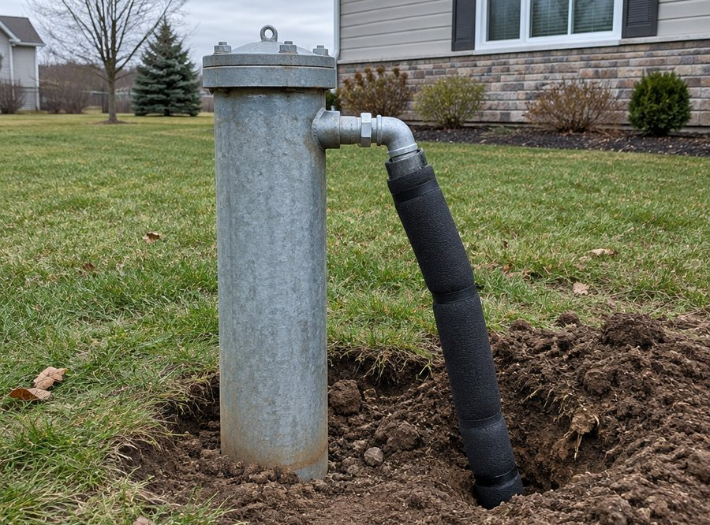

Скважина это система, а не одна труба
Разрез оборудования и разбор симптомов: где искать причину, когда пропала вода.
- Элементов
- 7
- Симптомов
- 5

Из чего состоит система
Каждый элемент отвечает за своё, и у каждого свой способ ломаться. Понимание этой цепочки экономит деньги: не нужно менять насос, если виновато реле.
- Обсадная трубадержит стенки скважины, по ней опускают насос
- Насосподнимает воду; боится песка, сухого хода и перегрева
- Обратный клапанне даёт воде уходить обратно в скважину
- Оголовок и кессонзакрывают устье и защищают от мороза и грязи
- Гидроаккумуляторсглаживает давление и снижает число включений насоса
- Реле давлениявключает и выключает насос по порогам
- Труба в домподаёт воду от скважины до разводки
Что ломается чаще всего
Наблюдения по выездам: где искать причину в первую очередь, когда пропала вода.
Нет воды, насос молчит
Вероятные причины
- Пропало питание или выбило автомат
- Сработала защита от сухого хода
- Вышло из строя реле давления
- Обрыв кабеля или сгорела обмотка насоса
Что проверяем
- Питание на щите и на кабеле
- Контакты реле давления
- Сопротивление обмотки и целостность кабеля
Чаще всего дело в электрике, а не в самой скважине. Поэтому начинаем с замеров, а не с подъёма насоса.
Насос гудит, но вода не идёт
Вероятные причины
- Уровень воды упал ниже насоса
- Заклинило вал или износились рабочие колеса
- Воздушная пробка в трубе
- Засорился фильтр или заилило приёмную часть
Что проверяем
- Уровень воды в скважине и дебит
- Давление на выходе из насоса
- Состояние фильтра и обратного клапана
Если насос гудит, но не качает, важнее всего понять, есть ли вода над ним. Иногда достаточно промыть и прокачать, иногда нужен подъём и замена.
Давление скачет, насос включается часто
Вероятные причины
- Гидроаккумулятор потерял воздух или порвалась мембрана
- Сбиты настройки реле давления
- Утечка в системе или не держит обратный клапан
- Слишком большой разрыв между порогами включения
Что проверяем
- Давление воздуха в баке
- Пороги включения и выключения
- Герметичность системы и обратный клапан
Частые включения быстро убивают насос. Обычно это лечится настройкой и заменой мембраны, без замены самого насоса.
Вода с песком или мутная
Вероятные причины
- Скважина заилилась или поднялся уровень песка
- Повреждён или отсутствует фильтр на приёме
- Насос стоит слишком низко
- Скважину не прокачали после бурения
Что проверяем
- Глубину установки насоса
- Состояние фильтра
- Скорость осветления воды при прокачке
Песок в воде убивает и насос, и сантехнику. Если после прокачки муть возвращается, смотрим фильтр и положение насоса.
Вода уходит из системы
Вероятные причины
- Не держит обратный клапан
- Утечка в подземной части трубы
- Трещина в корпусе насоса
- Негерметичное соединение в кессоне или адаптере
Что проверяем
- Держит ли давление система после отключения насоса
- Состояние соединений в кессоне
- Обратный клапан
Падение давления на выключенном насосе показывает, что вода где-то уходит. Дальше ищем, где именно: сверху или в трубе.
Обустройство: как это выглядит в жизни
Два способа вывести воду из скважины в дом. Выбор зависит от глубины, грунта и того, где стоит дом.
Кессон
Котлован с герметичной ёмкостью над скважиной. Внутри помещается оборудование, зимой туда можно спуститься для ремонта.
- Удобно обслуживать
- Можно поставить фильтры и автоматику
- Нужен монтаж ёмкости и гидроизоляция
Скважинный адаптер
Труба выходит из скважины ниже глубины промерзания. Оборудование стоит в доме, на улице ничего не видно.
- Ничего не видно на участке
- Оборудование в тепле
- Сложнее доступ к скважине
Расскажите, что происходит с водой
По описанию часто понятно, какое оборудование брать на выезд. Позвоните: разберёмся, в чём причина, и договоримся о времени.